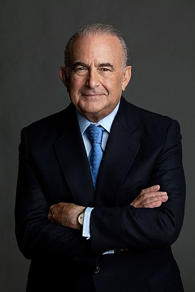

Audience
The audience of this web page is comprised of small and large entrepreneurs, who carry out commercial activity in the Venezuelan territory, and need advice and monitoring of their accounting records in accordance with the tax regulations of that country and the current accounting standards, both financial and accountant.
Users of this site will be people over 18 years of age, business owners, in search of financial profitability, process control and tax protection.
Personas
Lorenzo Mendoza
The CEO of Empresas Polar, Venezuela's largest privately held company, with $7 billion in annual sales. The company is owned by his family.The company ("Empresas Polar") is one of Venezuela's major employers and is seen as a symbol of resilience in a country rocked by political and economic turmoil.
Gustavo Cisnero
A Venezuelan businessman and Chairman of Grupo Cisneros.Grupo Cisneros is one of the largest privately held media entertainment organizations in the world.Long an advocate of free enterprise,Cisneros has for many years been expanding his operations outside of Venezuela and into overseas markets, including the U.S., Spain and more recently China
Scenarios
- What are the current accounting standards in Venezuela?
- What are the taxes in Venezuela and their calculations?
- I have 3 years presenting losses in my financial results, what should I do to improve this?
- There is a need for an internal audit, fraud is presumed.
- The company must be liquidated due to insolvency, what are the processes that I must carry out?